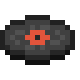
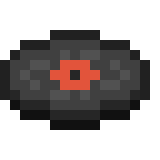
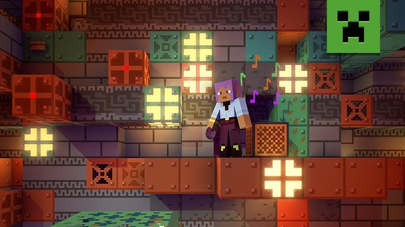

Minecraft
The Sounds of Heaven: Minecraft's Soundtrack
By: Mojang ┃ May 17, 2009


The soundtrack to Minecraft, composed primarily by Daniel Rosenfeld (known as C418), is a stunning blend of ambient, minimalist melodies that perfectly capture the game's spirit of exploration and creativity. Its beauty lies in its subtlety—soft piano notes and airy synths drift in and out as players build, mine, and wander through endless blocky landscapes. The music doesn’t demand attention but instead creates an emotional backdrop that evokes nostalgia, wonder, and peaceful solitude. Whether it's the gentle chords of "Sweden" or the haunting tones of "Subwoofer Lullaby," the soundtrack elevates Minecraft from a simple sandbox game to a deeply immersive and emotionally resonant experience.
There’s something timeless and magical about the Minecraft soundtrack that makes it stand apart from almost any other video game music. It captures the essence of quiet solitude in a vast, open world, where you’re free to shape your own story. The ambient tracks create a feeling of emotional openness—space to breathe, dream, and build without pressure. It doesn’t try to dictate mood with dramatic swells or action cues; instead, it invites introspection and imagination, making it one of the most emotionally resonant soundtracks ever created for a game.
From the first moment a gentle piano melody filters through the silence of a digital landscape, the Minecraft soundtrack casts a spell. It speaks to the beauty of stillness and simplicity, something rare in the often fast-paced world of video games. C418 managed to compose music that is both deeply personal and universally moving, allowing players to find their own meaning in each track. Whether you’re building grand castles or wandering alone through forests and caves, the soundtrack is always there—quiet, beautiful, and profoundly human. It’s music that doesn’t just support the game; it becomes a part of your memories.

Some of the Artist Behind the Magic
C418
C418, the alias of German composer Daniel Rosenfeld, is the creative genius behind the original Minecraft soundtrack—a body of work that has become iconic in the gaming world. Known for his ambient, minimalist style, C418 brought a unique emotional depth to Minecraft through music that was both hauntingly beautiful and quietly profound. His ability to evoke feelings of nostalgia, solitude, and wonder through simple melodies helped define the emotional tone of the game and set it apart from others in the genre. Beyond Minecraft, C418 has continued to release experimental and genre-blending albums, showcasing his versatility and commitment to pushing creative boundaries. His influence on the world of video game music is undeniable, and his work continues to resonate with millions of players around the globe.
Lena Raine
Lena Raine is a celebrated composer whose contributions to the Minecraft universe brought a fresh yet emotionally rich layer to the game’s musical legacy. Best known for her work on Celeste, Raine joined the Minecraft soundtrack with the Nether Update, introducing tracks like "Rubedo," "Chrysopoeia," and "So Below"—each a vivid sonic exploration of the game’s mysterious and dangerous new realms. Her compositions blend ambient textures with melodic depth, creating music that feels both ethereal and grounded, perfectly complementing the game's expanded worlds. Raine's work is notable for its emotional clarity and atmospheric storytelling, and her addition to Minecraft helped evolve its soundscape while remaining true to the meditative essence established by C418. Her music doesn't just accompany gameplay—it enriches it, making exploration feel all the more immersive and memorable.
Aaron Cherof
Aaron Cherof is a talented composer who brought a deeply emotional and cinematic touch to Minecraft with his work on the Trails & Tales update. His pieces, such as “A Familiar Room” and “Bromeliad,” are rich with warmth and nostalgia, blending gentle piano, strings, and ambient textures that resonate with the quiet beauty of the game’s evolving world. Cherof’s music feels deeply personal, often evoking a sense of memory, reflection, and quiet adventure— perfectly aligning with Minecraft’s themes of exploration and creativity. His additions to the soundtrack continue the legacy of emotional depth established by C418 and Lena Raine, while also carving out a distinctive voice that is tender, expressive, and unmistakably his own.